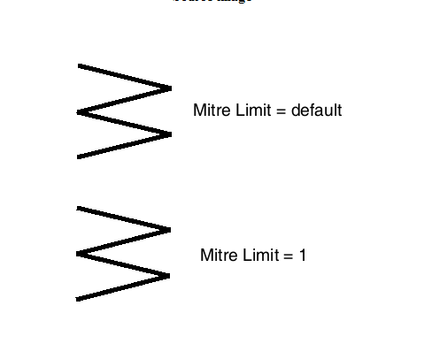

| Source image | Reference image |
|---|---|
 |
This test uses the ACI file to modify the default (32767) Mitre Limit attribute. The target CGM contains 2 polylines. The MitreLimit of the topmost polyline is defaulted while the other at the bottom is set explicitly to 1 in the CGM file. The ACI for this test should set the default Mitre Limit to 1 which will cause the topmost polyline to be displayed with a Mitre Limit of 1. The bottom polyline should remain unchanged by the ACI file. The image on the right shows the CGM rendered as it should appear after the default Mitre Limit is set by the ACI file.